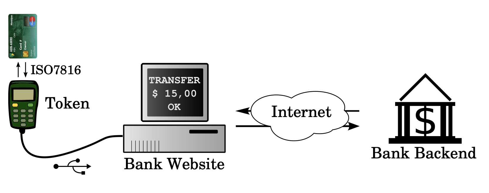
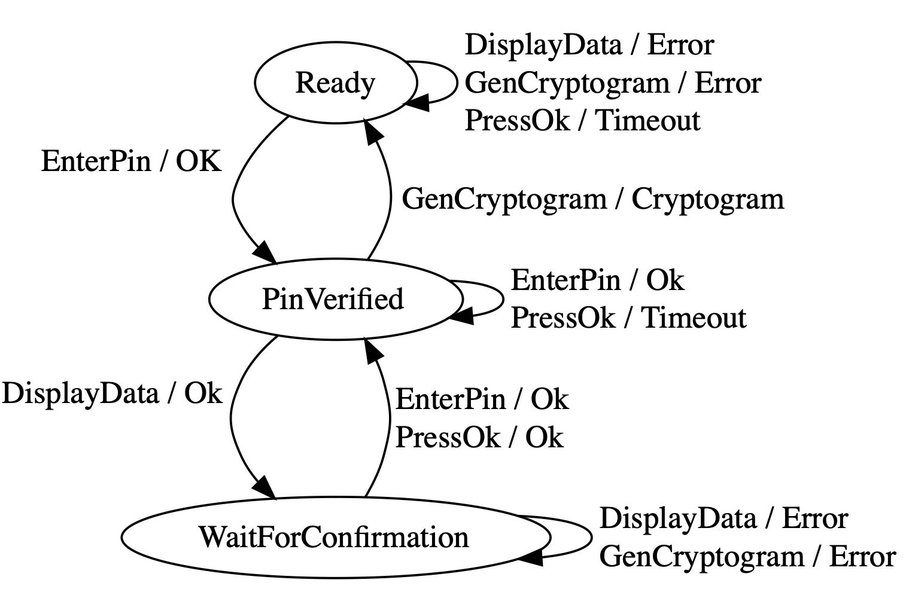

The e.dentifier
The e.dentifier2 is a smartcard reader for Internet banking, used by the Dutch bank ABN AMRO.
You may have seen these types of devices before. This particular device connects to your PC over USB, and responds to commands both from the user and the PC.
The flow is that a user types their PIN number, which is validated by the smart card and which unlocks the smart card. The PC then sends the reader some data representing a transaction, which it displays to the user. The user then pushes the "OK" button, after which it gets the smart card to generate a signature to confirm the displayed transaction (a "cryptogram" in this protocol). The PC then sends that cryptogram to the banking server to prove that the user confirmed the transaction.

All of this work, including the reverse engineering of the state machine of the e.dentifier, is courtesy of the Radboud Universiteit Nijmegen.
Modeling the problem
There are a number of ways in which we could model this problem. We could model the individual behavior of the reader and the smart card as Threads or Actors, like we did for Challenge Fourteen.
In this case we're going to do something a bit simpler: the team from Radboud Universiteit has figured out the state machine of the combined system of Reader and Smart Card by automatically probing it. We are going to model the state machine:

Translating to Alloy
Let's put down some data structures to hold the state of our system:
-- The states of the E.dentifier
enum State { Ready, PinVerified, WaitForConfirmation }
-- The events that can happen, both from the Human as well as the PC
enum Event { HumanEnterPin, HumanPressOk, PcDisplayData, PcGenCryptogram }
-- The signals that the E.dentifier sends to the PC
enum Output { Ok, Error, Timeout, Cryptogram }
-- One global object to hold all states
one sig Edentifier {
var state: State,
var event: Event,
var output: Output,
}
The next question is how we are going to model the state transition table. A state transition table has 3 or 4 columns:
- The current state
- The input (event)
- The next state
- The output (signal to the PC)
EXERCISE: think about how you would represent the state transition table
in Alloy. There are a couple of different ways you could do it: you could write
one or more preds to represent valid combinations of these 4 elements, or a
fun that represents a set of 4-tuples. Write a couple of transitions in your
mechanism of choice.
We ended up representing the transitions as a giant table of 4-tuples. This is
an elegant way of representing the table, but it has one downside: all
0-argument functions will automatically be represented in the visualizer, so we
will see a bunch of lines when we visualize the model! In the Theme settings
of the visualizer, we will have to turn off visualizing $transitions.
fun transitions: set State -> Event -> State -> Output {
Ready -> PcDisplayData -> Ready -> Error
+ Ready -> PcGenCryptogram -> Ready -> Error
+ Ready -> HumanPressOk -> Ready -> Timeout
+ Ready -> HumanEnterPin -> PinVerified -> Ok
+ PinVerified -> PcDisplayData -> WaitForConfirmation -> Ok
+ PinVerified -> HumanEnterPin -> PinVerified -> Ok
+ PinVerified -> HumanPressOk -> PinVerified -> Timeout
+ PinVerified -> PcGenCryptogram -> Ready -> Cryptogram
+ WaitForConfirmation -> HumanEnterPin -> PinVerified -> Ok
+ WaitForConfirmation -> HumanPressOk -> PinVerified -> Ok
+ WaitForConfirmation -> PcDisplayData -> WaitForConfirmation -> Error
+ WaitForConfirmation -> PcGenCryptogram-> WaitForConfirmation -> Error
}
-- Check that there is a row in the table for every combination of
-- State and Event
check TransitionsTableIsComplete {
// ...
}
EXERCISE: it is a good exercise to add validations into your model
to make sure you didn't forget anything. Complete the check above
that ensures that the table is complete; that is, there is a row in
it for every combination of state and input.
Running the state machine
Let's write some predicates that we'll use to run the state machine:
-- Set up the initial state of the state machine
pred init {
// ...
}
-- Make the state machine perform one step according its current state and
-- current event.
pred step {
// ...
}
-- Running the state machine means setting it up and then performing a step
-- at every time step.
pred runStateMachine {
init
always step
}
-- Test the predicates above. Run the state machine, and expect to find it
-- in some particular state at some point
run {
runStateMachine
eventually { Edentifier.state = WaitForConfirmation }
}
EXERCISE: complete the init and step predicates above to initialize
the state machine and make it perform a step, respectively. Variables you don't
constrain will vary across all possible values, which can be useful! Decide
on what you want output to represent: the response to the current event,
or the response to previous time step's event.
Checking for useful properties
A desirable behavior of a smart card reader like this would seem to be that no signing code can be generated unless a user enters their PIN code, sees the transaction and presses the OK button.
check UserConfirmationIsRequiredForAllCryptograms {
runStateMachine => {
// ...
}
}
EXERCISE*: complete the condition above which checks that the user is involved in the generation of cryptograms. Try checking the system, does it satsify the requirement? Think about the time operators you want to use here. Here are your choices:
- Future time operators
always P: P is true in the current and all future stateseventually P: P is true in at least one current or future stateafter P: P is true in the next stateP until Q: P is true zero or more times and then Q is trueQ releases P: P can only be false after Q is true (maybe Q never happens)
- Past time operators
historically P: P is true in the current and all past statesonce P: P is true in at least one current or past statebefore P: P is true in the previous stateP since Q: Q was true once and then P was true until the current stateQ triggered P: ...
The e.dentifier is vulnerable to a hijacked PC: if the PC software sends a
PcGenCryptogram event after the smart card has been unlocked, the display and
confirmation can be bypassed.
EXERCISE: if you want, design a state machine that prevents this behavior.